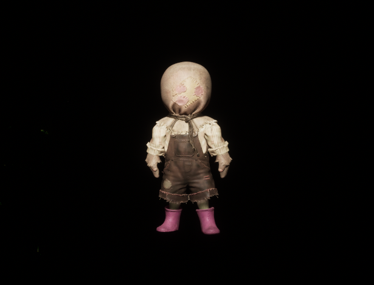
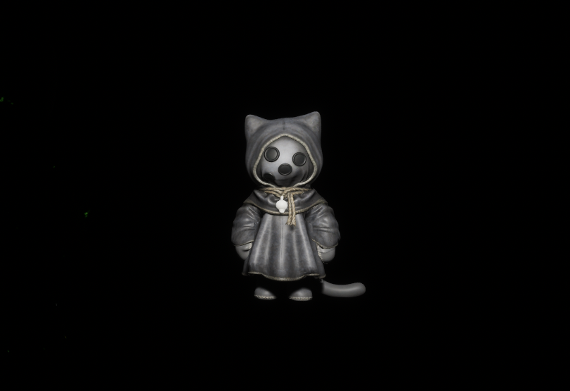
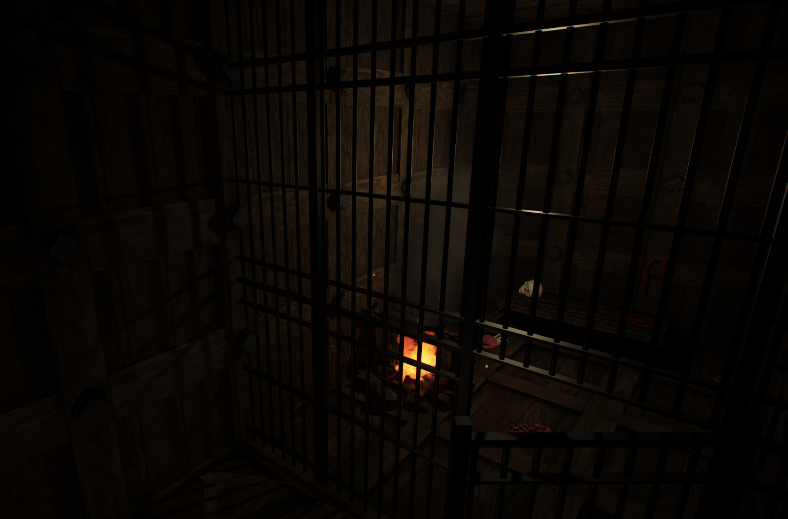
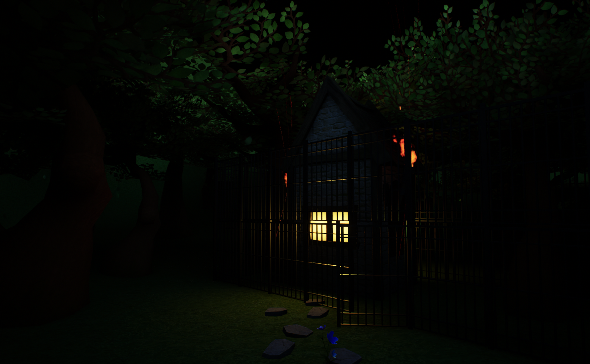
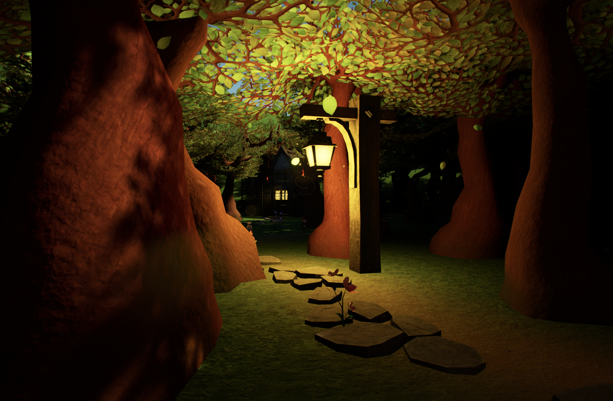
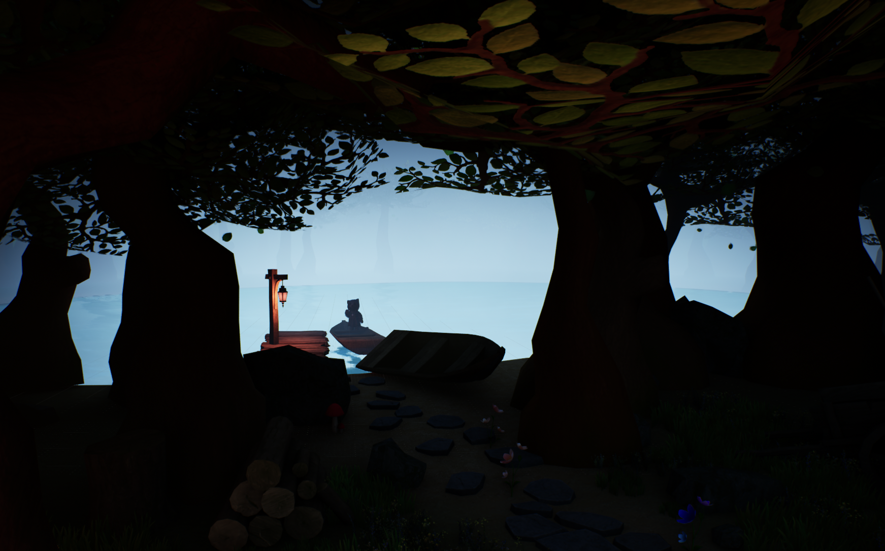
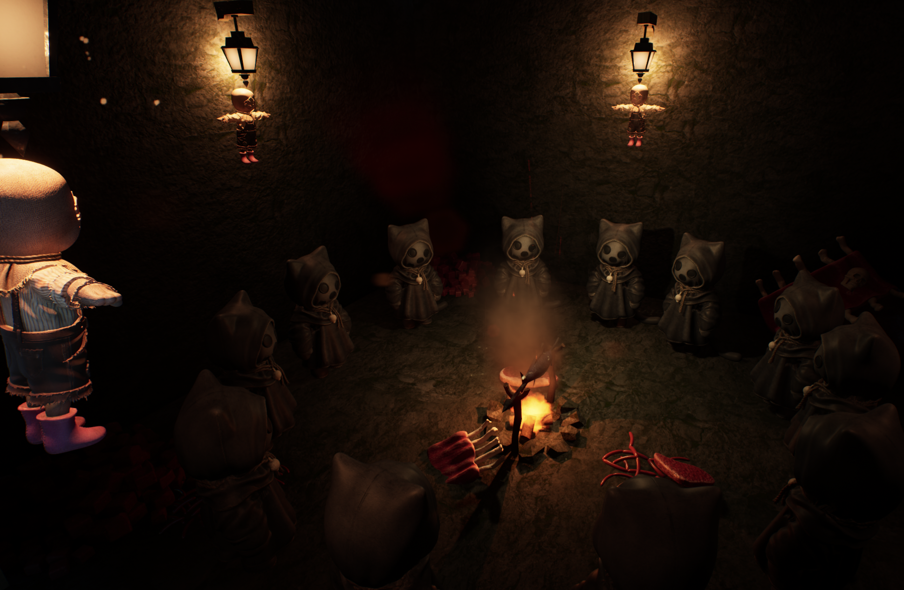

cat-land
Cat-land is a dark fantasy storyworld and worldbuilding project developed in Unreal Engine. The project imagines an island ruled by cats, where humans are positioned at the bottom of the hierarchy and treated as livestock. Through environment design, lighting, and spatial progression, the work builds a fictional society shaped by power, ritual, and control.
The world is organized into three different parts. Player begins in the first part, which is in a prison; and after breaking out, player enters the village, which also houses animal followers; and the final zone is the lake connecting the final ritual site of the cat cult. This layered structure turns the environment itself into a narrative system, where movement upward reflects changes in power, access, and belonging.
The larger concept behind the project explores anti-anthropocentrism by reversing the familiar food chain. Instead of placing humans at the center, the storyworld asks what it means to experience a system where humans are no longer dominant. The project focuses especially on mood, visual storytelling, and environmental guidance, using darkness and selective lighting to make key spaces glow and draw the player through the world.
This project presents the worldbuilding and level design of the larger interactive concept rather than the full narrative experience. It was created as a short-form storyworld focused on atmosphere, readable level flow, and the design of a believable, unsettling environment.
character design


environment views





